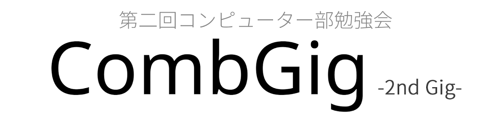

CombGig2

CombGig2とは?
CombGig2は、コンピュータ等の情報技術に興味のある中学生、高校生を対象としたイベントです。
現在、多くの学校にコンピュータ部・物理部・パソコン部といった情報技術に関係した部が存在しており、様々な方々がその中で活動しています。また、それ以外でコンピュータに興味があり、個人で活動している方も多くいます。
その活動は多種多様で興味深いものが多いものの外部との接点が少ない場合が多く、同年代で交流を行ってお互いに知識を深めたり、自分の持つ技術を活かしたり出来ないのが現状です。
そこで、こういった活動をするもの同士、交流し、刺激しあい、親睦を深める場を提供することを目的とし、CombGig2を開催することとなりました。
場所・日時
ドワンゴ セミナールーム（歌舞伎座タワー14F）
2014/12/21（日）13:00~ 終了後懇親会あり
参加費
無料です。ただし懇親会に参加する場合、別途500円～1000円程度用意をお願いします。
参加にあたっての注意事項
参加枠は、「中高生枠」と「大学生・社会人枠」の2つとなります。
「中高生枠」での参加者の中で希望される方は、5分程度のLTか10分程度のTalkを行うことができます。
「大学生・社会人枠」での参加は、「中高生に伝えたいこと」があり、LT(※)かTalk(※)される方に限定させていただきます。ご了承ください。
会場のドワンゴでは、PC用の電源が少ない（しかもMacのアダプタが刺さらない）ので、必要な方は電源タップの持参をおすすめします。
当日はニコニコ生放送での配信を予定しております。発表の内容を配信してほしくない場合、アンケートの方で「配信を希望しない」にチェックをお願いします。
スライド作成に慣れていない方は、宜しければこちらのテンプレートをご利用ください。
部活紹介・自分の活動について
※LTは5分ほどの短いプレゼンテーションです。話を簡潔に纏めることで、聞き手に飽きさせず、興味を持たせる狙いがあります。
※Talkは10分前後のものでで、LTより少し内容の深いプレゼンテーションを行うことができます。
参加の仕方
1. 登録ページからイベントに登録
何か変更があった場合はこちらで連絡します 。随時ご確認ください。
2. アンケートに回答
アンケートでLTの有無等を管理させていただきますので、必ずお答えください。
タイムテーブル
| 種類 | 内容 | 講演者 |
|---|---|---|
| Talk | 開催宣言と諸注意 | 運営 |
| Talk | B木について | gotoloop |
| Talk | 0から始めるセキュリティ・プライバシー確保 | mt_caret |
| Talk | スライドとデザインの話 | uruchan1997 |
| 休憩 | ||
| LT | 部活について | kip |
| LT | C#で作るExcelゲーム | tosaka2 |
| LT | BOOTがふっとんだ | ぱらつり |
| LT | Kbtterシリーズの紹介 | kb10uy |
| LT | CodeVS, CodeRunner, 競プロについて | uwi |
| LT | Vimを使って開発をしようよ！ | IDE |
| 休憩 | ||
| Talk | 通信対戦ゲームを作った話 | mipsparc |
| Talk | 部活のことについて | velengel |
| Talk | WAVE_WITH_GLSL | maroon_kuri |
| Talk | 最近の「気付き」について | KOBA789 |
| Talk | Dartについて、もしくはロボットセラピーについて | sh4869 |
| 休憩 | ||
| LT | ロボコン魂 | Kiwi |
| LT | Dreamsparkについて | tosaka2 |
| LT | 未定 | おいどん |
| LT | インターネット | ゆっくりしない |
| LT | CodeCraft | Kiwi |
| LT | 終了宣言 | 運営 |
| 懇親会 |
※講演者名とタイトルは、アンケートから一部変更して記載しています。変更を希望の方はご連絡ください。
※タイムテーブルは突然変わる可能性があります。
※LT・トークはまだまだ募集中です！
連絡
お問い合わせはuruchan1997@yahoo.co.jpか@mt_caretまでお願いします。
メインページに戻る